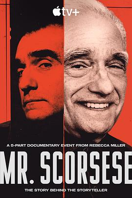

8.2
斯科塞斯先生
Mr. Scorsese
2025
美国
评分 8.2
导演:
丽贝卡·米勒
演员:
马丁·斯科塞斯 / 罗伯特·德尼罗 / 莱昂纳多·迪卡普里奥 / 玛格特·罗比 / 丹尼尔·戴-刘易斯 / 史蒂文·斯皮尔伯格 / 米克·贾格尔
类型:
传记,剧情
剧情简介
镜头缓缓展开，纽约小意大利的窄巷中，一名哮喘少年仰望城市灯火，画外音正是那位即将改变电影世界的男人——马丁·斯科塞斯。片中，他坦诚地回忆起那片瓦上倒映的天光和一路追逐的影像梦想。从大学课堂里的电影史辩论到与伙伴在布鲁克林街头拍摄短片，他每一步都沾染胶片化学的味道与城市潮湿的空气。随着他与罗伯特·德尼罗的首次合作，光影交错的银幕诞生，也唤醒了影片中“愤怒与救赎”的主题。合作莱昂纳多·迪卡普里奥与玛格特·罗比，他将操纵镜头如同指挥乐队，拍摄中的炮火、沉默、血迹、宗教符号迅速成为他语言的一部分。纪录片通过大量私人档案、访谈与幕后镜头，展现他并非只是一位导演，更是一个在理想与责任之间反复折返的人。在与史蒂文·斯皮尔伯格谈论《出租车司机》的删减争议时，他轻声说：“我差点去偷掉粗剪片。”这一幕揭示了创作背后的焦虑与坚持。纪录片不仅是他影像世界的展开，也是一场内省：当他站在镜头后的那一刻，他也开始审视自己。影片运用五集形式，带领观众穿越60多年影像史，从黑白转至彩色，从剧院转至流媒体。每一集的结构精密而富有情绪：灯光熄灭、胶片燃烧、剪辑响起、镜头定格。你不仅看到大师的成就，更触摸到他对“电影是什么”这个问题的不懈追问。本片让人明白：伟大的导演并非孤岛，而是一条流动中的影像河流，他既拥抱黑暗，也追寻光明。